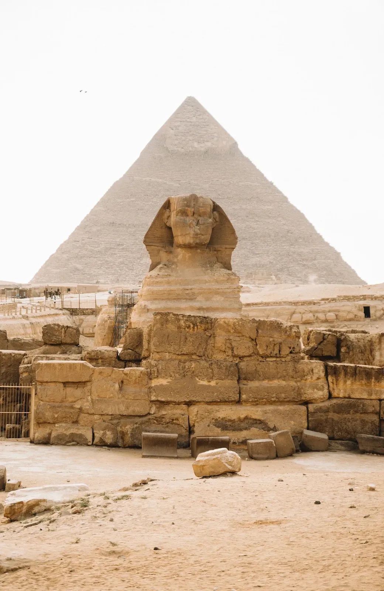

★ Incontournable
Pyramides de Gizeh & Sphinx
Les seules des Sept Merveilles du monde encore debout. La Grande Pyramide de Khéops mesure 138 mètres et fut la plus haute structure du monde pendant 3 800 ans. Arrivez tôt le matin pour éviter la foule. L'intérieur de la plus petite pyramide (Mykérinos) est accessible et vaut l'expérience claustrophobe. La vue depuis le plateau du Sphinx, en regardant les trois pyramides alignées, reste l'une des plus puissantes au monde.